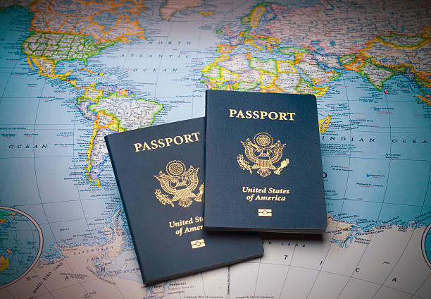

You must present the following essential documents to enter Canada:
- Canadian Immigrant Visa and Confirmation of Permanent Residence for each family member traveling with you
- Valid passport or other travel document for each family member traveling with you
- Two copies of a detailed list of all the personal or household items you are bringing with you
- Two copies of a list of items that are arriving later
- Proof that you have enough money to cover living expenses for six months

Depending on your situation, you should also bring the following important documents:
- Birth, baptismal and/or marriage certificates
- Adoption, separation or divorce papers
- School records, transcripts, diplomas and/or degrees
- Trade or professional certificates and licenses
- Letters of reference from former employers
- Résumé (list of your educational and professional qualifications and job experience)
- Immunization, vaccination, dental and other health records for each family member
- Driver’s license including an International Driver’s Permit
- Photocopies of all essential and important documents
- Car registration documents (if you are importing a motor vehicle into Canada)
The general waiting period to receive medical coverage in
Ontario is three months from your arrival date. You should
consider buying private health insurance until you become
eligible for medical coverage.
Go back to home page